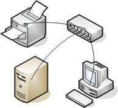
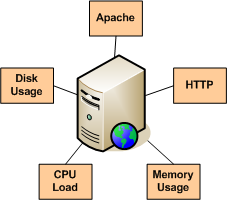
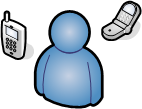
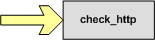

Up To: Contents
Up To: Contents
 See Also: Configuration Overview, Object Definitions
See Also: Configuration Overview, Object Definitions
What Are Objects?
Objects are all the elements that are involved in the monitoring and notification logic. Types of objects include:
More information on what objects are and how they relate to each other can be found below.
Where Are Objects Defined?
Objects can be defined in one or more configuration files and/or directories that you specify using the cfg_file and/or cfg_dir directives in the main configuration file.
 Tip: When you follow quickstart installation guide, several sample object configuration files are placed in /usr/local/nagios/etc/objects/. You can use these sample files to see how object inheritance works and learn how to define your own object definitions.
Tip: When you follow quickstart installation guide, several sample object configuration files are placed in /usr/local/nagios/etc/objects/. You can use these sample files to see how object inheritance works and learn how to define your own object definitions.
How Are Objects Defined?
Objects are defined in a flexible template format, which can make it much easier to manage your Nagios configuration in the long term. Basic information on how to define objects in your configuration files can be found here.
Once you get familiar with the basics of how to define objects, you should read up on object inheritance, as it will make your configuration more robust for the future. Seasoned users can exploit some advanced features of object definitions as described in the documentation on object tricks.
Objects Explained
Some of the main object types are explained in greater detail below...
|
Hosts are one of the central objects in the monitoring logic. Important attributes of hosts are as follows:
Host Groups are groups of one or more hosts. Host groups can make it easier to (1) view the status of related hosts in the Nagios web interface and (2) simplify your configuration through the use of object tricks. |
 |
|
Services are one of the central objects in the monitoring logic. Services are associated with hosts and can be:
Service Groups are groups of one or more services. Service groups can make it easier to (1) view the status of related services in the Nagios web interface and (2) simplify your configuration through the use of object tricks. |
 |
|
Contacts are people involved in the notification process:
Contact Groups are groups of one or more contacts. Contact groups can make it easier to define all the people who get notified when certain host or service problems occur. |
 |
|
Timeperiods are are used to control:
Information on how timeperiods work can be found here. |
|
Commands are used to tell Nagios what programs, scripts, etc. it should execute to perform:
|
 |